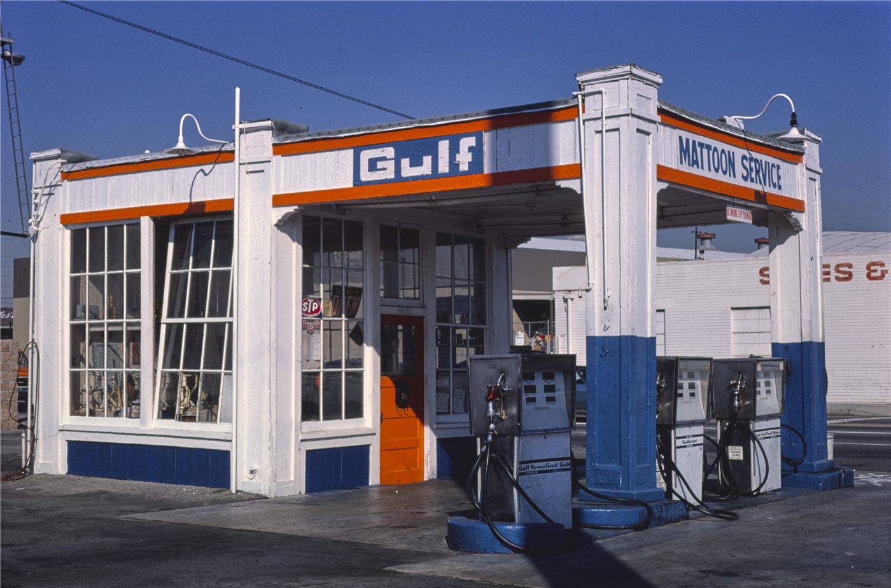

美 정부, 기업 풍력 이탈 막으려 25억 달러 투입 논란
미국 정부가 기업들이 풍력 발전에서 멀어지는 흐름을 막기 위해 25억 달러를 투입했다는 보도가 나오며 정책 효율성 논란이 일고 있다.
진태흥 기자 · 2026.06.22
橋국제·경제

미국 정부가 기업의 풍력 발전 이탈을 막기 위해 약 25억 달러를 지출했다고 환구망이 22일 전했다. 정책의 비용 대비 효과를 두고 논쟁이 일고 있다.
광고 문의 · 300×250풍력 등 재생에너지 정책은 보조금과 인센티브 구조에 민감하게 반응한다. 정책 신호가 흔들리면 기업의 장기 투자 결정도 함께 흔들린다는 지적이다.
비판하는 쪽은 막대한 재정 투입이 시장 왜곡을 낳을 수 있다고 본다. 반면 옹호하는 쪽은 에너지 전환의 마중물로서 초기 지원이 불가피하다고 반박한다.
재생에너지 공급망은 글로벌하게 얽혀 있어 미국의 정책 변화는 아시아 부품·소재 기업에도 영향을 준다. 한국·대만 기업들도 흐름을 주시한다.
華橋時報는 정파적 평가를 피하고, 정책 비용과 에너지 전환의 현실적 함의를 균형 있게 전한다.
출처·참고 (사실 확인용 — 본문은 직접 재작성)
· 環球網
· 環球網